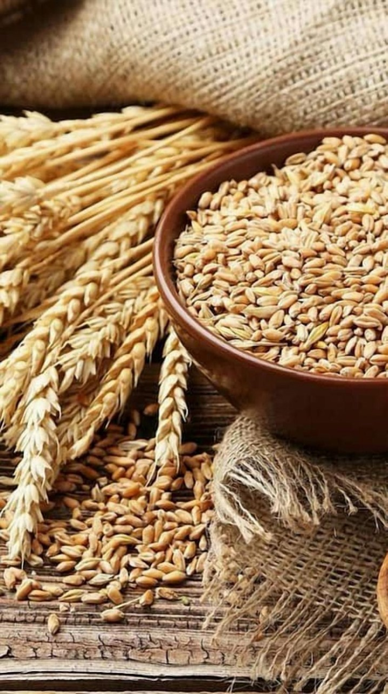

Wheat Cultivation Guide

1. Land Preparation
Plow the land 3–4 times to get fine tilth and remove weeds.
Apply well-rotted FYM or compost before the last plowing.
Ensure proper leveling for uniform irrigation.
2. Seed Selection & Sowing
Use high-yielding, rust-resistant certified seeds.
Sowing time: Late October to mid-November (rabi season).
Seed rate: 45–60 kg per acre; spacing 20–22 cm between rows.
Treat seeds with fungicide before sowing.
3. Water Management
First Irrigation:
20–25 days after sowing (CRI stage).
Next Irrigations:
At tillering, jointing, flowering, and grain-filling stages.
Do not irrigate during the maturity stage to avoid lodging.
4. Fertilization Schedule
Basal Dose:
FYM (5–8 tons), Urea (40–50 kg), DAP (25 kg), MOP (15 kg).
Top Dressing:
Urea (30–35 kg) at 25–30 days after sowing.
5. Weed & Pest Management
Weeds:
Isoproturon or 2,4-D can be sprayed at 25–30 days.
Pests:
Aphids and termites — use Chlorpyrifos or recommended insecticide.
Diseases:
Rust and smut — apply fungicide if signs appear.
6. Investment Breakdown (Per Acre)
Input
Estimated Cost (INR)
Seeds
₹1,000 – ₹1,500
Fertilizers
₹2,000 – ₹3,000
Pesticides/Fungicides
₹800 – ₹1,200
Labor
₹6,000 – ₹9,000
Irrigation
₹1,500 – ₹2,500
Total Investment
₹11,000 – ₹17,000 per acre
7. Harvesting & Yield
Harvest when grains are hard and golden brown.
Expected yield: 18–25 quintals per acre.
8. Market Rate & Profit Estimation
Average market price: ₹2,000 – ₹2,800 per quintal.
Gross returns: ₹36,000 – ₹70,000 per acre.
Net profit: ₹20,000 – ₹55,000 per acre.